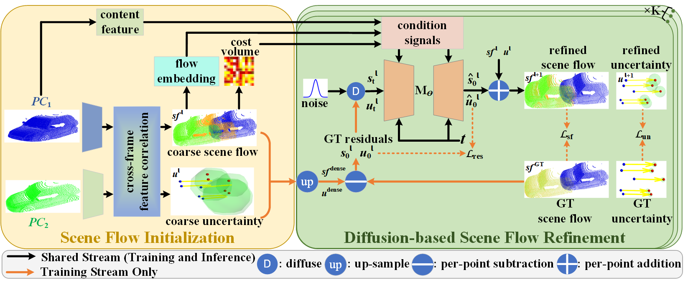

Advisor
Prof. Brian Sheil
Laing O'Rourke Associate Professor in Construction Engineering at Cambridge; intelligent underground construction and monitoring.
Ireland
A bridge for predictive physical intelligence: world models, 4D robot vision, generative dynamics, and robot learning across Cambridge and Ireland.
Purpose
We develop predictive world models for robot planning, manipulation, and simulation.
Our research connects Cambridge and the University of Galway.
Temporal robot vision for dynamic, multi-view, and action-conditioned scenes.
Point clouds, neural fields, Gaussian representations, and flow-based dynamics.
World models evaluated through robot tasks, not only offline prediction metrics.
Our people
Explore researchers and students from all three groups in one place.
Advisory Board
Advisor
Laing O'Rourke Associate Professor in Construction Engineering at Cambridge; intelligent underground construction and monitoring.

Advisor
Full Professor of Computer Science at ETH Zurich and Director of the Microsoft Mixed Reality and AI Lab in Zurich; 3D computer vision, robot vision, SLAM, and semantic scene understanding.

Advisor
Cheryl and John Neerhout, Jr. Distinguished Professor and Distinguished Professor of Mechanical Engineering at UC Berkeley; adaptive control, digital control, mechatronics, and robotics.
Representative work



Join
Relevant backgrounds include embodied AI, video prediction, 3D generative models, robot learning, reinforcement learning, simulation, and real robot experimentation.
Contact